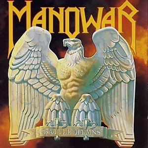
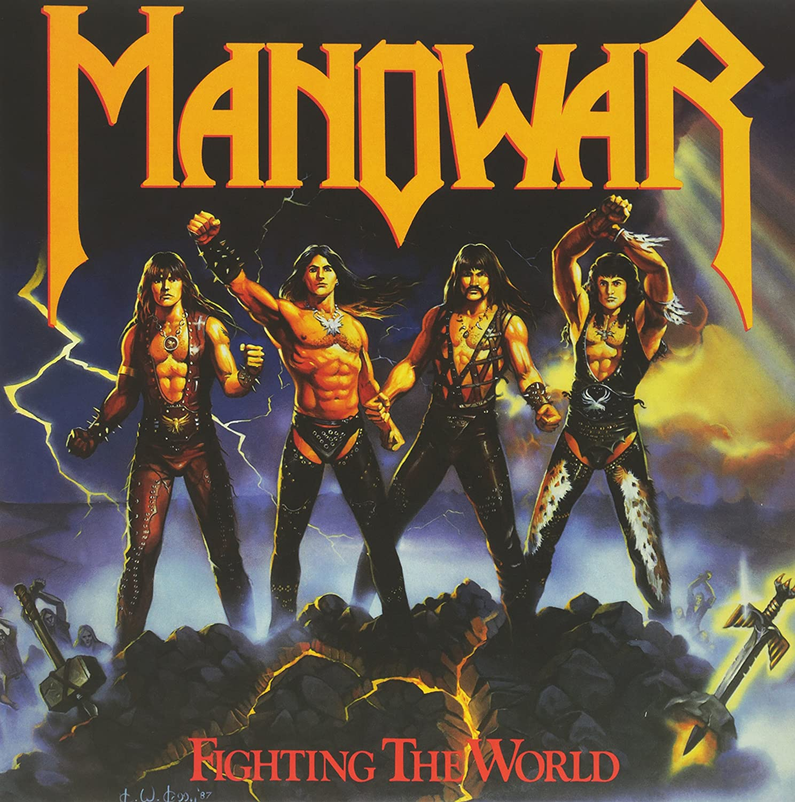
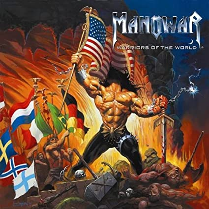

Discografía
Manowar fue una de las bandas más influyentes del power metal estadounidense de los años 80 con su estilo único y su metal melódico sobrecargado. Durante sus más de 40 años de carrera en activo, su discografía repleta de auténticos bombazos es bastante extensa.
Álbumes de estudio
asdfasdfasdf
- Battle Hyms (1982)
- Into Glory Ride (1983)
- Hail to England (1984)
- Sign of the Hammer (1984)
- Fighting the World (1987)
- Kings of Metal (1988)
- The Triumph of Steel (1992)
- Louder Than Hell (1996)
- Warriors of the World (2002)
- Gods of War (2007)
- The Lord of Steel (2012)



Álbumes re-editados
asdfasdfasdf
- Battle Hyms MMXI (2010)
- Kings of Metal MMXIV (2014)
Álbumes en directo
asdfasdfasdf
- Hell on Wheels (1997)
- Hell on Stage (1999)
- Gods of War Live (2007)
Recopilatorios
asdfasdfasdf
- Manowar Kills (1992)
- The Hell of Steel: Best of Manowar (1994)
- Anthology (1997)
- The Kingdom of Steel (1998)
- Steel Warriors (1998)
EPs (Extended Play)
asdfasdfasdf
- Dawn of Battle (2002)
- The Sons of Odin (2006)
- Thunder in the Sky (2009)
- The Lord of Steel Live (2013)
- The Final Battle I (2019)
Sencillos
asdfasdfasdf
- Defender (1983)
- All Men Play on 10 (1984)
- Blow Your Speakers (1987)
- Herz Aus Stahl "(Heart Of Steel)" (1988)
- Metal Warriors (1992)
- Defender (remixed) (1993)
- Return of the Warlord (1996)
- Courage (1996)
- Courage Live (1996)
- Number 1 (1996)
- Live in Spain (1998)
- Live in Portugal (1998)
- Live in France (1998)
- Live in Germany (1998)
- Warriors of the World United (2002)
- The Fight for Freedom (2002)
- The Dawn of Battle (2002)
- King of Kings (2005)
- Thunder in the Sky (2009)
Albumes de vídeo
asdfasdfasdf
- Secrets of Steel (1997)
- Hell on Earth Part I (2000)
- Fire and Blood / Hell on Earth Part II (2002)
- Warriors of the World United (2002)
- Hell on Earth Part III (2003)
- Hell on Earth Part IV (2005)
- The Day the Earth Shook – The Absolute Power (2006)
- Magic Circle Festival Volume 1 (2007)
- Magic Circle Festival Volume 2 (2008)
- Hell on Earth Part V (2009)